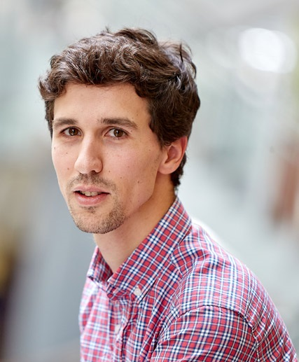

Cyber-physical systems
Automated, simulation-based testing for safety-critical and highly configurable industrial systems.
I am Aitor Arrieta, Professor of Software Engineering at Mondragon University.
My research develops practical testing techniques for cyber-physical systems, Physical AI, AI-based systems, and generative AI. I work closely with industry to turn research into dependable real-world software.

I earned my PhD in Software Engineering at Mondragon University in 2017. My work spans search-based software testing, the test oracle problem, regression testing, and dependable AI.
Automated, simulation-based testing for safety-critical and highly configurable industrial systems.
Safety, fairness, robustness, and validation for embodied, autonomous, and generative AI systems.
Explore the labSearch-based, metamorphic, and regression testing methods that make validation more effective.
European research and long-term industrial collaborations provide the context for testing ideas against real engineering constraints.
Hybrid and generative intelligence for trustworthy autonomous cyber-physical systems.
Trustable AI-driven internet search, co-led with Professor Sergio Segura.
Collaborations with Orona, Fagor Automation, and Developair on software testing and dependable systems.
An H2020 project coordinated from 2020 to March 2023. The project is retained here as part of the research portfolio.
Current supervision and visiting collaborations across software engineering, robotics, and trustworthy autonomous systems.
Primary doctoral supervision at Mondragon University and external co-supervision with Simula Research Laboratory.
Current master’s supervision, incoming research visits, and an expanding record of former doctoral students, postdocs, and visitors.
Recent publications, leadership roles, projects, and recognition.
Joined the editorial board of the leading software engineering journal.
Serving as Area Chair for Security and Other Non-Functional Properties at ASE 2026.
Joined the ICSE 2027 Research Track program committee for the first time.
“Metamorphic Testing of Vision-Language Action-Enabled Robots,” led by Pablo Valle, was accepted at ICST 2026.
Joined the program committees of ISSTA 2026 and ICST 2026.
A new project applying generative AI techniques to autonomous cyber-physical systems.
Appointed to the editorial boards of Science of Computer Programming and Information and Software Technology.
Received the Best Paper Award at the 15th International Symposium on Search-Based Software Engineering.
My teaching combines rigorous foundations with current industrial tools, hands-on engineering, and challenge-based learning across bachelor’s, master’s, and doctoral education.
Explore teaching